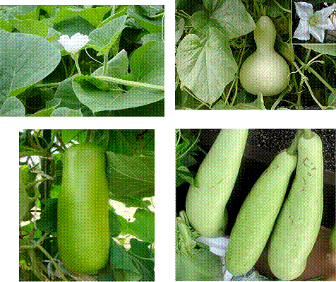

HORT 281 :: Lecture 10 :: ORIGIN, AREA, PRODUCTION, VARIETIES, PACKAGE OF PRACTICES FOR BOTTLE GOURD

Origin, area, production, varieties, package of practices for BOTTLE GOURD
Bottle Gourd - Lagenaria siceraria (Mol.) Standl. (2n = 22) (Hindi: Lauki)
Bottle gourd is extensively grown in India and fruits are available throughout the year. The name bottle gourd is due to bottle like shape of fruit and its use as a container in the past. Fruits at tender stage are used as a cooked vegetable and for preparation of sweets and pickles. Hard shells of mature fruits are used as water jugs, domestic utensils, floats for fishing nets, etc. As a vegetable it is easily digestible. It has cooling effect and has diuretic and cardiotonic properties. Fruit pulp is used as an antidote against certain poisons and is good for controlling constipation, night blindness and cough. A decoction made out of leaf is taken for curing jaundice. Seeds are used in dropsy.
Origin
Originated in tropical Africa, the crop is domesticated in Asia, Africa and New World.
Botany
|  |
Bottle gourd is a climbing annual with a duration of 3 ½ to 4 months. Flowers are solitary, chalky white in colour and open at night. Fruits are fleshy and vary in shape and size.
Varieties
Developing institution |
Variety |
Special features |
IIHR, Bangalore |
Arka Bahar |
Fruits straight without crook neck medium sized each weighing 1.0 kg at marketable stage, fruit light green and shining, yield 40-50 t/ha. |
IARI, New Delhi. |
Pusa Naveen* |
Fruits cylindrical, straight and free from crooked neck. Average weight 550 g. |
|
Pusa Summer |
Long fruits having a length of 40-50 cm |
|
Pusa Summer Prolific Round (PSPR) |
Round fruits having a diameter of 15-18 cm. |
|
Pusa Sandesh |
Round green medium sized fruits weighing 600 g. Early variety ready for picking in 55-60 days. Yield 29-32 t/ha. |
|
Pusa Meghdoot |
F1 hybrid between PSPL and Sel.2 Fruits long and light green. |
|
Pusa Manjari |
F1 hybrid between PSPR and Sel.11. Fruits round and light green. |
|
Pusa Hybrid 3 |
F1 hybrid having green and slightly, club shaped fruits without neck. Yield 42.5 t/ha. |
NDAU&T, Faizabad, UP. |
Narendra Rashmi |
Moderately tolerant to pumpkin beetle, powdery mildew and downy mildew. Fruits bottle shaped having shallow neck, average weight 1.0 kg. Yield 30 t/ha. |
Punjab Agricultural University, Ludhiana |
Pusa Komal |
Fruits medium size with oblong shape and light green skin. Tolerant to CMV, early harvest (70 DAS), potential yield 40 t/ha. |
|
Punjab Round |
Fruits round, light green and shining. Yield 15.5 t/ha. |
CSAUA&T, Kanpur. |
Kalyanpur |
Fruits long with tapering with some what pointed blossom end, yield 30 t/ha in 120 days. |
|
Azad Nutan |
Early variety with long neck free fruits weighing 1.5 kg. |
MPAU, Rahuri |
Samrat |
Fruits cylindrical without crook neck, greenish white, 30-40 cm long weighing 700-800 g, yield 43 t/ha. |
CBPUA&T, Pantnagar |
Pant Sankar Lauki 1 |
This F1 hybrid has medium long fruits. Released by Central Variety Release Committee (CVRC) in 1999. |
TNAU, Coimbatore |
CO.1 |
Pale green coloured and bottle shaped fruits with narrow neck and round bottom. Yield 25-30 t/ha. |
* Varieties released / identified by AICRP (Vegetables)
Heterosis
A good number of F1 hybrids, Pusa Meghdoot, Pusa Manjari, Pusa Hybrid 3 and Pant Sankar Lauki 1 were developed in public sector in bottle gourd. F1 hybrid Varad (MGH 4) developed by Mahyco, Jalna yields 60-65 t/ha. It has cylindrical bright green, 40-45 cm long fruits weighing 600-750 g.
Climate
Bottle gourd is a typical warm season vegetable. Though crop tolerates cool climate better than musk melon and water melon, it cannot tolerate frost. Well drained fertile silt loam is ideal for cultivation of bottle gourd. Crop is quite suitable for river bed cultivation because of its deep tap root system. A deep soil supports vines for a long period.
Season
Crop is grown during summer and rainy season. In places where water is not scarce, it is grown throughout the year.
Land preparation and sowing
plants / pit. Soaking seeds 12-24 hours in water or in succinic acid (600 ppm) for 12 hours improves germination. Seed rate recommended is 3-6 kg/ha.
Training and pruning
As bottle gourd puts forth good vegetative growth, proper training and pruning are advantageous. Training plants to bower helps to tap sunlight more effectively and yield as high as 80 t/ha was obtained. Axillary buds of growing vines should be removed till vines reach the bower height. When vine reaches bower, apical bud is removed at 10-15 cm below bower to allow 2 or 3 branches to spread on bower. After formation of 4-5 fruits, vines are again pruned allowing 2-3 axillary buds only to grow on primary vines. It is also advisable to remove all yellow and pale coloured older leaves near bottom portion.
Interculture
Bottle gourd is highly responsive to heavy application of manures and fertilizers. Follow fertilizer package and interculture operations as that of ash gourd and bitter gourd.
Harvesting
Fruits are harvested at tender stage when it grows to one third to half. Fruits attain edible maturity 10-12 days after anthesis and are judged by pressing on fruit skin and noting pubescence persisting on skin. At edible maturity seeds are soft. Seeds become hard and flesh turn coarse and dry during aging. Tender fruits with cylindrical shape are preferred in market. Harvesting starts 55-60 days after sowing and is done at 3-4 days intervals. While harvesting, care should be taken to avoid injury to vines as well as to fruits. Plucking of individual fruits is done with sharp knives by keeping a small part of fruit stalk along with fruit. Average yield is 20-25 t/ha for open pollinated varieties and 40-50 t/ha for F1 hybrids.
Fruits can be stored for 3-5 days under cool and moist condition. For export purpose, fruits are packed in polythene bags and bags are kept in boxes of 50-100 kg capacity.
Application of fertilizers in Tamil Nadu
Apply 10 kg of FYM (20 t/ha) 100 g of NPK 6:12:12 mixture as basal and 10 g of N per pit 30 days after sowing.
********
- The origin of bottle gourd is
a. Asia |
b. Java |
c. India |
d. Europe |
- After drying _______vegetable is used as domestic utensils
a. Pumpkin |
b. Bottle gourd |
c. Sanke gourd |
d. Watermelon |
- Among the cucurbits _______ is most drought hardy crop
a. Pumpkin |
b. Bottle gourd |
c. Cucumber |
d. Japan |
- The average yield of bottle gourd varies from _________ t/ha
a. 5-10 |
b. 10-20 |
c. 25-30 |
d. 40-50 |
- The maturity indices for harvesting bottle gourd is
a. Higher pubescence |
b. Less pubescence |
c. Fruit turns light green |
d. Fruits turn dark green |
| Download this lecture as PDF here |